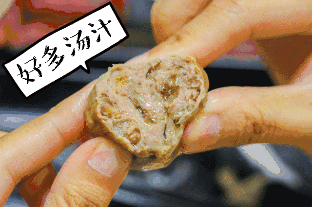

谈谈你最喜欢吃的潮州美食
作者 | 最后更新于

牛肉丸
牛肉丸
作为一个在外求学的学生，最心心念念的就是家里的牛肉丸了，火锅里的牛肉丸，粿条汤里的牛肉丸，真的是怎么吃都不感觉腻。在广州这边，也有几家较正宗的潮州菜，但是价格颇贵，而且还是觉得没有家里的好吃。
当然，除了牛肉丸之外，也非常想念家里各种各样的小吃，家常菜…… 以前，对这些东西，也没有说非常喜欢。但离开家之后，却时常会想起舌尖上这些熟悉的味道。
你们呢？在评论区，告诉我，你最喜欢的潮州美食吧。
作为一个在外求学的学生，最心心念念的就是家里的牛肉丸了，火锅里的牛肉丸，粿条汤里的牛肉丸，真的是怎么吃都不感觉腻。在广州这边，也有几家较正宗的潮州菜，但是价格颇贵，而且还是觉得没有家里的好吃。
当然，除了牛肉丸之外，也非常想念家里各种各样的小吃，家常菜…… 以前，对这些东西，也没有说非常喜欢。但离开家之后，却时常会想起舌尖上这些熟悉的味道。
你们呢？在评论区，告诉我，你最喜欢的潮州美食吧。